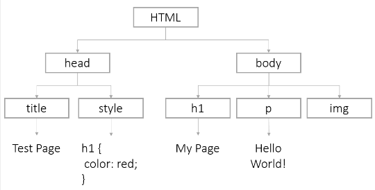

Your browser doesn't support the features required by impress.js, so you are presented
with a simplified version of this presentation.
For the best experience please use the latest Chrome, Safari or Firefox
browser.
Intro to JavaScript
Part 1
Variable
It is a place to store values
Declaring a Variable
To declare (create) a variable, type the key-word "var" and the variable name
Initializing a Variable
To give your variable a starting value
Using a Variable
Once you have created a variable, you can use it in your code. Just type the name of the variable.
Naming Variables
The variable name is case-sensitive.
A new variable needs to have a unique name
It need to start with a letter, $, or _.
It can only be made of letters, numbers, $, or _.
Variables Values
Variables can hold different types of information, like strings, numbers, booleans etc.
The value of a variable can change over time.
String
It is a group of characters, words, phrases. You put your string in quotes.
Number
Can be either integer or float (decimal).
Also we can do math with numbers using Arithmetical Operators (+, -, /, * etc)
Boolean
It is a True or False value
Comments
You can leave notes in your program that people can read and computers will ignore.
Getting Results
Open a pop-up box
Display a message in your console
Function
It is a separable, reusable piece of code that takes some input (argument) do some changes to it and return result.
Declare a Function
Create a function in other words
Use a Function
Arguments
Function can accept input values, called arguments
Returning Values
You can make function return value that you can use later
Return will end a function
Scope
Global scope
Local scope
If/else Statements
The 'if' Statement
Use if to decide which lines of code to execute, based on a condition
Comparison Operators
Watch out '=' and '==' are different!
The 'if/else' Statement
Use else to provide an alternate set of instructions
The 'if/else if/else' Statement
If you have multiple conditions, you can use 'else if'
Logical Operators
If you have multiple conditions, you can use 'else if'
Using Logical Operators
You can use these operators to combine conditions
Coding Time
Intro to JavaScript
Part 2
Arrays
It is ordered lists of values
Creating Arrays
You can put different types of data into an array
Array Length
The length property tells you how many things are in an array
Using Arrays
You can access items with "bracket notation" by using the position of the element you want
Important! Programmers start counting at zero.
Changing Arrays
You can use bracket notation to change an item in an array
Expanding Arrays
Arrays do not have a fixed length. You can use "push" to add something to an array
Loops
We need loops when we want to repeat some action over and over again
While Loops
'While' will repeat the same code over and over until some condition is met
Infinite Loops
Make sure something changes in the loop and you have a condition, or your loop will go on forever...
For Loops
'For' loops are very similar, but you declare a counter in the statement
Iterating Through Arrays
Use a for loop to easily process each item in an array
Break
To exit a loop, use the break statement
HTML
Hyper Text Markup Language. It is a structure of the elements on the page.
CSS
Stands for Cascading Style Sheets. CSS describes how HTML elements are to be displayed on screen
DOM
Stands for Document Object Model. It defines the logical structure of documents and the way a document is accessed and manipulated
The DOM: sample model

DOM Access
To change the page
Find the DOM element (node) and store it in a variable
Use methods to manipulate the node
DOM Access
QuerySelector
To find:
We would do:
DOM: innerHTML
Each DOM node has an innerHTML property with the HTML of all its children. You can use the property to view or change the HTML of a node.
For example, you can overwrite text in the particular tag:
Events
An 'event' is a type of object that is created when the user interacts with a web page. For example, JS creates an event when a user clicks an element.
Calling Functions From HTML
Listening Functions
First, find the object:
Then add an event to that object:
Preventing Defaults
Elements like buttons and links have a default behaviors. However, the event objects has a built-in method to handle that:
Comments
Getting Results